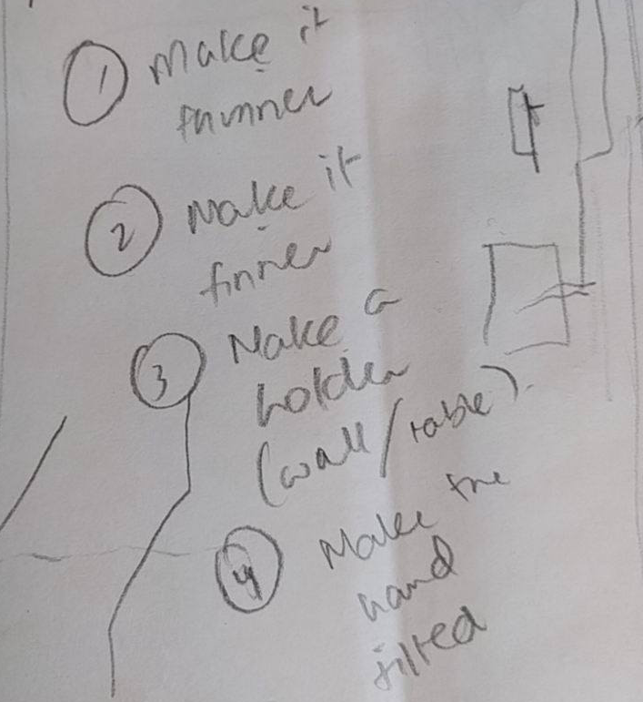
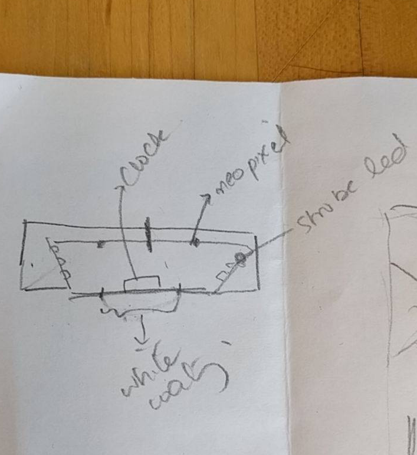
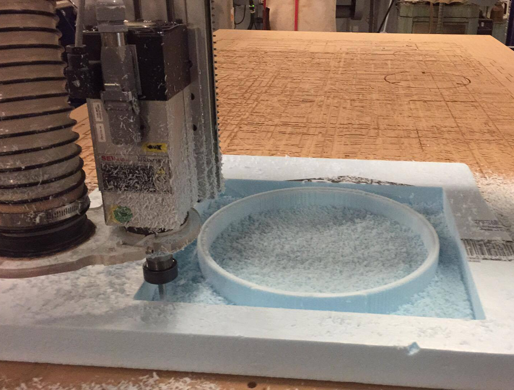
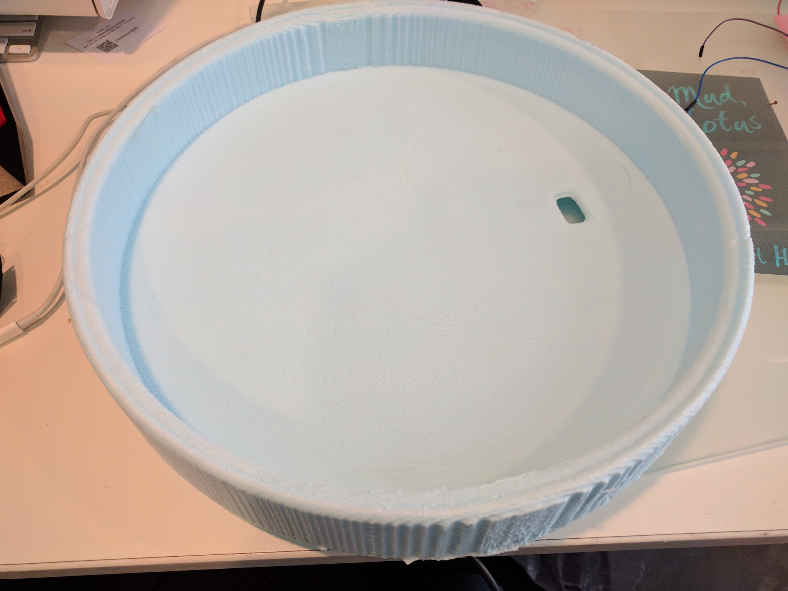
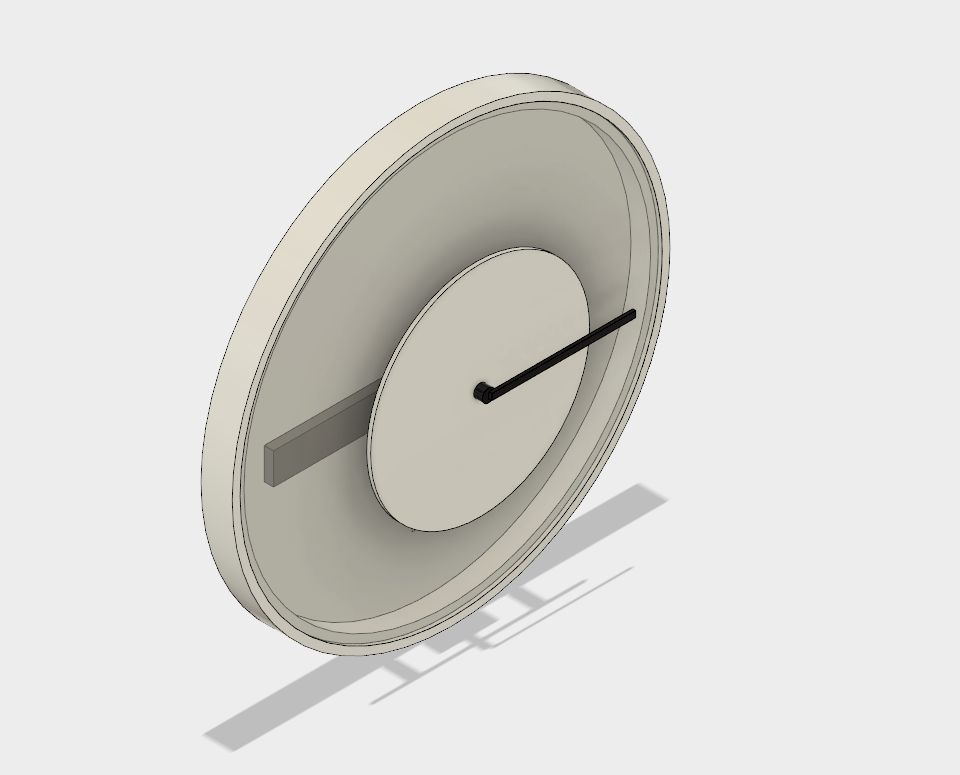
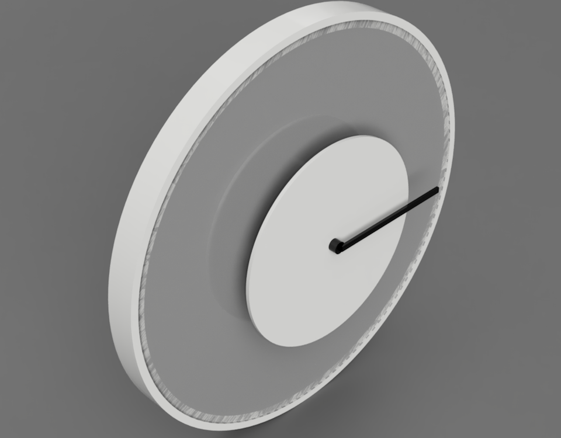

Performance
Wood Prototype
Overview
I had two main goals this week
- Test out different material for my clock, e.g. wood, foam, so that I may move away from cardboard
- Try out the design suggestions made by Justin and other TAs in the class (shown below)
- 
- 
Foam Milling
My clock needed to be around two inches thick and we had two inches thick foam in the studio so I thought that foam could be good to mill the base. I also had the additional benefit of being light and could give my clock a sky-like feel because of its light weight and color. However, the foam turned out to be just a little too weak for all the components, so I abandoned it.
- 
- 
CAD model
I created a CAD mode for my clock. It can be viewed here online: Fusion 360 model . Here are some screenshots of the model.
- 
- 
Woodwork
Stacking Layers
I need my clock rim to be 2 inches thick to host all the elements, but my wood was at most 0.7 inches thick. So I decided to stack 3 layers of wood together to make the rim
Slanted sides
One of the suggestions from the last week was to make the sides of the sides slanted so that when I stuck the LEDs on the sides, the LEDs would face towards the clock hand more. I drew a sketch of it with wood layers.
Milling
I encounterred several problems during milling. The first one was the type of wood I was using. I was using Spruce Panel Wood because it was the only one available in Home Depot the dimensions I wanted, but Jen explained to me that this wood was not ideal of milling narrow rings. She recommended thick plywood, which I bought from the N51 shop and milled there.
Rings
After several failed attempts, I was able to mill the rings correctly. Justin later pointed out that instead of milling three pieces, and then sticking them together, I could have stuck the wood panels and then milled it. But panels of wood take around 24 hours to dry before they can be milled and I didn't have that much time because I was flying to a conference for a week next day, so I was probably good that I had three rings.
Finished wood sides
Glued and Sanded Wood
Front view
Finished wood
Side View
Assembled clock
Final Clock
Final Test Videos
After putting together the wood prototype together, I test the strobe lights and the neopixels.